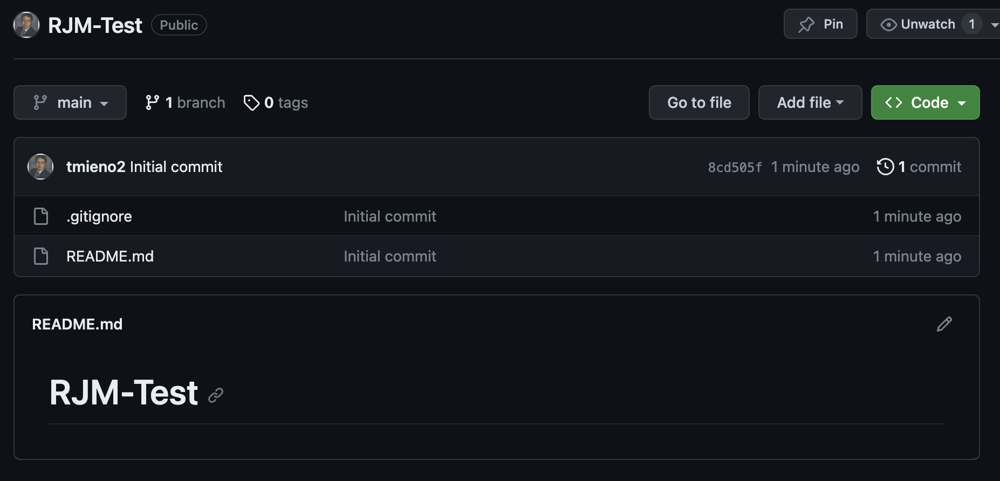

4 Version Control (Optional, but recommended)
This chapter serves as an introduction to version control. It begins by explaining the benefits of version control systems using an easy-to-understand analogy in Section 4.1. Subsequently, it guides you through the process of setting up Git and GitHub in Section 4.2. Then, it explains how to establish an RStudio project with version control enabled via Git and its seamless integration with GitHub in Section 4.3. Finally, the chapter concludes with insights into collaborating effectively using version control in Section 4.4.
4.1 What is version control?
Version control is a system that records changes to files over time so that you can recall specific versions later. The entire history of changes you have made are recorded and you can go back to a previous version any time.
Let’s visualize a simplified, figurative explanation of version control. Picture the olden days when tasks in an office were carried out manually: writing with pencils, using typewriters, and such. In this setting, you work with four main pieces of infrastructure for version control: two desks and two shelves.
- desk A (in-house)
- desk B (in-house)
- shelf A (in-house)
- shelf B (outside house)
At desk A, you actively work on your project, be it writing manuscripts, coding, etc. Once you have made significant progress and wish to archive your work, you walk to the second desk (desk B). Here, you select the pieces of your work to be stored as a collection in your library (akin to staging) and duplicate the collection. You affix a sticky note to the copy detailing the nature of this collection. Then, you place this collection on shelf A, effectively archiving it (committing). Wisely, you label this collection for easy retrieval in the future (yes, you are like a trained librarian). This particular shelf resides inside your house, meaning only you can access it. However, to safeguard your progress, you create a duplicate of the collection, make a quick trip, and store it on shelf B situated outside your home (pushing to a remote repository). This way, even if a disaster strikes, like a house fire, your work remains intact and recoverable. Additionally, this external shelf can be made not as exclusive as shelf A inside your house. While others cannot take items from it, you can grant them access to replicate its contents if you wish (public v.s. private repository). You can even permit them to suggest modifications (pull requests). Upon receipt, you can evaluate these suggestions and, if suitable, integrate them into your collection on this shelf as its different version. Subsequently, you can copy (sync) these updates to your local shelf (pulling).
Fortunately for us, none of these actions are carried out physically. There is no need to “visit” Shelf B or “photocopy” your work. All these processes occur digitally, facilitated by your computer and online platforms.
In a more professional summary:
Version control systems serve as a reliable backup. If errors occur or work is lost, it’s possible to revert to a prior version.
Version control provides an audit trail for code alterations. This allows for monitoring changes, identifying contributors, and understanding the rationale behind each modification. This functionality is crucial when collaborating in teams but remains beneficial even for solo projects.
Another notable advantage of version control is its ability to significantly declutter your project folder. Have you ever found yourself creating multiple versions of the same code or manuscript and naming them by appending the modification date and your initials (especially in collaborative scenarios)? For instance:
- manuscript_01_02_2023_TM.docx
- manuscript_01_03_2023_TM_KS.docx
- manuscript_01_07_2023_TM.docx
- manuscript_02_01_2023_TM_NB.docx
- manuscript_02_21_2023_TM_NB_KS.docx
- manuscript_05_02_2023_TM.docx
While this practice does make it clear who made modifications and when, version control automatically records this information when you archive (commit) to a version control system. Furthermore, it meticulously tracks changes between versions, making comparisons straightforward, as mentioned earlier. With version control, you can always work with a single file for a single purpose, such as manuscript.docx, simplifying file management.
4.2 Set Up Git and GitHub
4.2.1 Set Up Git
- Install Git:
- Windows: Download from Git for Windows
- macOS: Use Homebrew (
brew install git) or download from the git website
- Configure git:
git config --global user.name "Your Name"
git config --global user.email "youremail@example.com"4.2.2 Sign up on GitHub:
- Go to GitHub.com
- Sign up
4.3 Basic Git Workflow Illustration
4.3.1 Create a new repository on GitHub
We first start with create a project repository (directory, folder) at Github. After signing into GitHub, you will see tabs like below at the left upper corner of the website.
Clic on Repositories and you will see this:
Then, you will be directed to a page like this.
- Put your desired repository name inside the Repository name box (We call this reposiroty “RJM-Test” in this illustration)
- You can add description in the Description box if you desire
- Pick one of Public or Private (Private will be picked in this illustration)
- Check the Add a README file (this will create README.md file automatically in your repository)
- You can pick a default .gitignore file (R is chosen here)
- You can pick the license type (No license specified here)
Once you input information, a new repository created and you will be directed to a page like this.

You can see that .gitignore and README.md are in this repository.
4.3.2 Clone the repository and designate it as an RStudio Project on RStudio
Now, open RStudio and click on the Project button (upper right corner), select New Project -> Version Control -> Git. Then, you will see a popup window like below:
Now, go back to the repository page and click on the green Code button:
You can then click on the button with two hollow squares stacked (right to the url with your repository name in it). This copies the url.
Now go back to the RStudio and paste the url to the Repository URL: box. Also specify where you want to clone (make a copy of) this repository in the Create as subdirectory of: box. Here, my Desktop was chosen.
Then, click the Create Project button. The repository are now copied (cloned) to your local machine (Users/tmieno2/Desktop for me). You also should have noticed that RStudio is resfreshed and you are on the newly created project you just created with the contents inside the GitHub repository.
At the file tab (leftmost tab of the bottom right panel), you see that RJM-Test.Rproj file is added, indicating that this directory is recognized as an RStudio Project.
Let’s go back to the original GitHub repository and see what it looks like now.
Well, nothing has changed. You are not seeing the RJM-Test.Rproj file. This is because you have not submitted (uploaded) any changes in the local directory to the GitHub repository. The GitHub repository will not be automatically updated when you make changes on your local machine. This is not a Dropbox or Box syncing for a good reason.
Let’s now add a folder called code and create simulate.R inside it. We also add test.R to that folder. Pretend that simulate.R is your main analysis code. You would like to have it archived before you make significant changes to the code. On the other hand, test.R is where you experimented things and you do not wish to put it in the archive1. Before you archive simulate.R to shelf A, you bring that to another desk (desk B). This is called staging. You can do that by checking the box left to code/ on the Git tab of the right upper pane.
Well both simulate.R and test.R were staged even though we only want to archive simulate.R. You can uncheck test.R. But, let’s make Git stop keeping track of this file entirely so that we do not have to do this again. This is where .gitignore file comes in. If you look into the file, you can see something like this because I picked R-default for the initial .gitignore file when I created this repository on GitHub.
This is a list of files (or the pattern of file names using regular expression) that will be ignored by Git. To have Git ignore test.R, you can add the path to the file relative to the working direcotry, which is automatically set to the root RStudio project directory. So, add “code/test.R” like below:
After you save this change, you should not see “code/test.R” on the Git tab any more.
Let’s also check RJM-Test.Rpoj as well. We now have a collection of files. The act of putting a collection to a shelf is called committing. You can do this by hitting the Commit button. When you click on the button, you should see a screen like below:
Every time you commit, you are require do make a comment (sticky note on what you did in this collection). Make this comment informative, so that when you (or others) look back, you know what this particular commit is about.
After putting in a comment, hit the “Commit” button in the popup window. Now, the collection is officially in the shelf (Shelf A).
Now, we would like to put this collection in the GitHub repository (Shelf B) online so that we are sure that we have a backup that we can rely on just in case something horrible happen to your computer. Bringing the collection to shelf B is called pushing. This can be done by hitting the “Push” button. Once you push the collection, no we see it on the GitHub repository like below:
Now, suppose you make further progress in your analysis in simulate.R. Specifically, you decided to use rnorm() instead of runif().
You then commited this change. But, you realized that you should not be using rnorm(). Unfortunately, you do not remember what you used before. To see the previous version of the same file, you can click on the “History” button.
By default, the most recent commit is selected and you can see below that what changes were made to what file. Here, it shows that mean(runif(N)) was changed to mean(rnorm(N)) in the last commit. If you want to recover that part of the code, then you can just copy what you had (mean(runif(N))) and paste it to the current version of code/simulate.R manually (this becomes unrealistic if you have too many changes that you need to revert.). Note that you can click on View file @ce71acb71 at the right upper coner of the box for the commited version of code/simulate.R.
4.4 Collborations